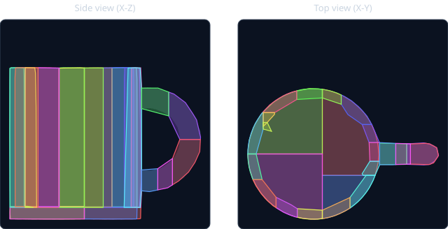

Scan2USD
Why this project exists
The Microsoft Robotics Simulation role asks for "scan → simulation-ready asset" skills. Each pipeline stage is chosen to turn a listed gap into a demonstrated skill, and color calibration carries your Physically-Based Calibration idea into a new domain.
| Posting asks for | Scan2USD stage that shows it | Status |
|---|---|---|
| Reality capture (photogrammetry, NeRF / Gaussian splatting) | ① Capture · ② Reconstruct | next · needs your photos |
| Mesh optimization, PBR materials | ③ Process (clean, scale, decimate) · color-calibrated albedo | done |
| Collision geometry, mass / inertia, physics parameter estimation | ④ Physics (CoACD hulls, inertia tensor, friction presets) | done |
| Articulated objects | ④ Physics: revolute joints (lids, hinges) | planned · M3 |
| OpenUSD / glTF toolchains with physics metadata | ⑤ Export (UsdPhysics schemas, glTF) | done |
| Automated quality checks, simulation stability | ⑥ Validate (33 checks + MuJoCo drop tests) | done |
| Isaac Sim / MuJoCo, synthetic data, domain randomization | ⑦ Simulate (MuJoCo done; Isaac Sim + Replicator planned) | partial · M4 |
The pipeline at a glance
Seven stages. Each one takes the previous stage's output and adds one kind of real-world truth: shape, scale, color, then physics.
Capture
Phone photos circling the object, plus a color chart in the same light.
Reconstruct
Photos → 3D mesh (photogrammetry) or Gaussian splats.
Process
Remove debris, fix holes, Z-up, meters, decimate while staying watertight.
Calibrate
Fit a 3×3 color matrix on the chart; apply it to the albedo.
Physics
Convex decomposition for collision; mass, CoM and inertia from volume × density.
Export + Validate
OpenUSD with UsdPhysics + glTF; 33 checks incl. drop tests.
Simulate
Isaac Sim scenes and domain-randomized synthetic images.
Where we are
We built the pipeline's core first, on a synthetic "scan," so it was ready before your photos. Real data comes next.
M1 · Pipeline core
- Clean / scale / decimate
- Color-chart calibration
- Convex collision + inertia
- USD + glTF export
- Validation + MuJoCo drops
- CLI, demo, 35 tests
M2 · Real captures
- Shoot 3–5 objects
- Reconstruct (RealityScan / COLMAP)
- Chart corner picking / auto-detect
- Measured mass & size ground truth
- Textured meshes end-to-end
M3 · Articulation
- Two-part object (hinged lid)
- UsdPhysics RevoluteJoint + limits
- Joint stability tests
M4 · Isaac Sim + data
- Load assets on the RTX 4090
- Drop / stack scenes
- Domain-randomized renders
- Gaussian-splat path (optional)
M5 · Showcase
- Results table + video/GIF
- Make repo public
- Resume line with real numbers
Demo results (synthetic mug)
The demo builds a mug, then makes it look like a real export: Y-up, centimeters, 0.2 mm noise, two floating debris specks, 370k triangles, and a warm camera color cast. The pipeline has to undo all of it, and because the true color and shape are known we can check how well it does.
Color calibration: captured · corrected · reference

Collision: 25 convex hulls hugging a concave mug

Physics estimate
| Volume | 154.9 cm³ |
| Mass (ceramic, 2400 kg/m³) | 371.9 g |
| Center of mass | (-1.41, 0.00, 4.00) cm |
| Principal inertia | 5.36 · 5.71 · 6.53 ×10⁻⁴ kg·m² |
The CoM sits ~5 mm from the cup's axis, toward the handle, as it should.
MuJoCo drop tests
| Pose | Settles | Impact / rest penetration |
|---|---|---|
| upright | 0.14 s | 1.46 / 0.003 mm |
| tilted 25° | 0.61 s | 1.50 / 0.003 mm |
| on its side | 0.36 s | 1.47 / 0.003 mm |
Where the time goes
| Convex decomposition | 19.3 s |
| Clean + decimate | 5.6 s |
| Validation incl. 3 sims | 0.4 s |
| Load / color / mass / export | 0.3 s |
| Total | 25.6 s |
|---|
Anatomy of an output asset
What's inside ceramic_mug.usda. USD is a tree of prims, and each prim can have API schemas applied that give it extra meaning, such as "this is a rigid body."
Why it's split this way
- The render and collision meshes are separate. Cameras need detail; physics engines need a few convex shapes. Marking the hulls
purpose=guidekeeps them out of rendered images. - Mass lives on the root prim. The physics engine moves the whole Xform as one rigid body, and every collision mesh under it moves with it.
- Inertia is stored in its principal frame. USD keeps 3 numbers plus a rotation instead of a full 3×3 tensor; see "Inertia tensor" under Learn.
- Units are explicit. Z-up, meters and kilograms are written into the stage. Isaac Sim relies on these; an asset authored in centimeters but read as meters would be 100× too large and 10⁶× too heavy.
- kind=component marks this as a reusable asset that a scene can reference many times (e.g. 50 mugs in a scene, one file).
Code map
Everything lives in src/scan2usd/. Each module maps to a pipeline stage, and pipeline.py calls them in order.
| Module | Stage | What it does |
|---|---|---|
| mesh_ops.py | ③ Process | Load any mesh format, drop floaters, fill holes, Z-up / meters, place on the ground, topology-preserving decimation |
| color.py | ④ Calibrate | sRGB↔linear↔Lab, CIEDE2000, chart sampling via homography, least-squares CCM, albedo range check |
| physics.py | ⑤ Physics | Material presets, CoACD decomposition on a light proxy mesh, mass / CoM / inertia, principal frame |
| usd_io.py | ⑥ Export | Writes UsdGeom + UsdShade + UsdPhysics; reads assets back for validation; glTF export (Y-up) |
| simulate.py | ⑥ Validate | MuJoCo drop tests: stability (energy, penetration, NaN) and settling |
| validate.py | ⑥ Validate | 33 checks on the written file, producing Markdown and JSON reports |
| pipeline.py | all | Runs the stages in order, times each one, writes build_report.json |
| demo.py · cli.py | tools | Synthetic mug capture; scan2usd build | validate | calibrate | demo | materials |
Try it: .venv\Scripts\scan2usd demo, then open output\demo\asset\validation.md. To regenerate this page's figures: .venv\Scripts\python scripts\make_doc_figures.py.
Learn: the concepts behind each stage
Click a card to open it. Each one gives the idea in plain words, why it matters for robot simulation, and where it lives in the code.
Photogrammetry vs. Gaussian splatting two ways to turn photos into 3D
Photogrammetry finds the same feature points across many photos, solves for where each camera was (structure from motion), then builds a dense surface mesh with a texture. Output: triangles, which is what physics engines need.
3D Gaussian splatting represents the scene as millions of fuzzy colored blobs optimized to reproduce the photos. Novel views look photoreal, but there's no clean surface; you have to extract a mesh before you can simulate it.
Robot simulation needs both looks and physics. A common pattern is meshes for collision and mass, and splats (or a baked texture) for appearance.
Color calibration & CIEDE2000 your Physically-Based Calibration, for scans
Cameras don't record "true" color: lighting tint, white balance and sensor response all skew it. A ColorChecker has 24 patches with known values. We measure what the camera recorded for each patch and solve for the 3×3 matrix M that best maps measured → true (least squares, in linear light):
Then we apply M to the scan's texture. CIEDE2000 (ΔE) measures the color difference the way human vision perceives it: ΔE ≈ 1 is about the smallest visible difference, and below 2 is good for most work.
Why robots care: perception models trained on synthetic images transfer better to reality when the simulated colors match the real ones (sim-to-real gap).
Linear vs. sRGB color why the math happens in "linear"
Image files store sRGB values that are gamma-encoded, i.e. packed nonlinearly to suit human vision. Light itself adds linearly. Matrix math and lighting are only physically correct in linear values, so we decode, do the math, and re-encode.
PBR albedo also has a plausible range: nothing real is darker than charcoal (≈ sRGB 30) or brighter than fresh snow (≈ sRGB 240). The pipeline reports texels outside that range.
Convex decomposition why physics engines want convex pieces
Fast collision algorithms (GJK/EPA, used by PhysX and MuJoCo) only work on convex shapes, where any straight line between two points stays inside. A mug isn't convex: its cavity and handle hole are concave.
CoACD (SIGGRAPH 2022) cuts the mesh into pieces whose convex hulls stay within a concavity tolerance (--hull-threshold). Lower tolerance gives a tighter fit, more hulls, and slower simulation.
Trade-off we measured: running CoACD on a 4k-triangle proxy instead of the 20k render mesh cut the time from 123 s to 19 s, with the same fit.
Mass, center of mass & the inertia tensor how hard an object is to push and spin
Mass = volume × density. That needs a closed (watertight) mesh, because "volume" is meaningless for an open surface. Center of mass is the average position of all material: the point the object balances on.
The inertia tensor (3×3) says how hard it is to spin the object around each axis. Every rigid body has three principal axes where this matrix becomes diagonal; USD stores those three moments plus a rotation quaternion.
Wrong inertia is a classic simulation bug: objects wobble or spin unnaturally. The validator checks positivity and the triangle inequality.
--mass.OpenUSD & UsdPhysics the shared language of simulators
OpenUSD (Pixar, now the AOUSD standard) describes 3D scenes as layered trees of prims. NVIDIA Isaac Sim, Omniverse, Apple, Blender and Houdini all read it.
UsdPhysics is the standard physics vocabulary: RigidBodyAPI, MassAPI, CollisionAPI, joints and physics materials. Writing it once means any compliant simulator gets the same physical object, which makes it more than a 3D model.
Soft contacts & drop tests what "stable" means in simulation
MuJoCo models contact as a stiff spring-damper, so objects briefly sink in on impact. That penetration depends on impact speed and the contact time constant (solref), not on the shape, which is why all three drop poses first showed exactly 6.72 mm.
We drop each asset in three poses and check for: no NaNs, no energy gain (energy appearing from nowhere signals instability), shallow impact and resting penetration, and coming to rest.
solref = 0.005 (5× the 1 ms timestep).Synthetic data & domain randomization coming in M4
Robots learn perception (detect, segment, estimate pose) from labeled images. Rendering them in simulation gives perfect labels for free. Domain randomization varies lighting, materials, camera pose and distractors so the model learns what actually matters and generalizes to the real world.
Accurate scanned assets with calibrated color narrow the sim-to-real gap; randomization covers what's left.
Engineering lessons from today
Three real bugs that the validator and tests surfaced. These make good interview stories: each one is a measurement, a root cause, and a fix.
"The mug weighs 517 g"
The first run said 517 g; a real ceramic mug is about 350 g. Root cause: the decimator left 14 non-manifold edges, so the mesh wasn't watertight and volume fell back to the convex-hull union, which fills part of the cavity.
Fix: topology-preserving decimation (pymeshlab). Watertight again, volume within 0.12%, mass 372 g.
"125 seconds per object"
Profiling showed 98% of the time in CoACD. It was searching cuts on 20k render triangles, and the non-manifold input triggered an extra remeshing pass.
Fix: decompose a 4k-triangle proxy. 123 s → 19 s, same fit quality.
"6.72 mm in every pose"
Identical penetration in three different poses was the clue: it came from contact softness, not geometry. The check was also measuring the impact transient instead of resting contact.
Fix: stiffer contacts (solref 0.005), separate impact and resting thresholds. Now 1.5 mm / 0.003 mm.
Your capture checklist (for M2)
The pipeline doesn't need these to keep moving, but real data is what makes the project credible. Here's what helps most, in priority order.
What to shoot
- 3–5 everyday rigid objects with matte, textured surfaces: a mug, a wooden toy or block, a sneaker, a piece of fruit, a cardboard box.
- One articulated object for M3: a box with a hinged lid, a jewelry box, or a laptop-sized case. Shoot it closed, and open if possible.
- Avoid for now: shiny, transparent or very thin objects (glass, chrome, cables). Photogrammetry can't match features on them.
Ground-truth measurements (very valuable)
- Weigh each object on a kitchen scale (grams).
- Measure one dimension with a ruler (mm), e.g. height.
- These let us validate the estimates: "predicted 372 g, measured 361 g" is a strong result line.
How to shoot (per object)
- 60–120 photos in 3 rings around the object (low ≈15°, mid ≈45°, high ≈70°), one step every 10–15°, with 70–80% overlap between neighbors.
- Soft, even light: overcast daylight or diffuse indoor light. No flash, no hard sun.
- Lock exposure, white balance and focus (Pro mode). Changing settings between shots hurts both reconstruction and color.
- The object should fill ~60% of the frame. Put it on a textured surface (newspaper) so the software can track camera positions.
- Color chart: in the same light and settings, one photo with the chart flat, glare-free, filling ~¼ of the frame. If you don't have a ColorChecker, tell me; a gray card can work as a simpler fallback.
- If your phone supports it, shoot RAW + JPEG. Optional: flip the object and do a second pass for the underside.
D:\Local Projects\Scan2USD\data\raw\<object_name>\. That folder is git-ignored, so large captures stay out of the repo. Add a short notes.txt with the measured mass and size.